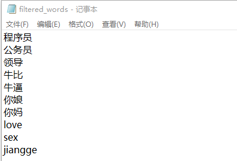

题目要求如下：
从文件解析敏感词，从终端获取用户输入。根据敏感词对用户输入进行过滤。这里过滤需要考虑不止一个过滤词：即将读取的所有过滤词，放进一个列表，用屏蔽词检索用户输入，如果有屏蔽词，则将其替换为*，如果没有，则不进行任何输入。直到所有屏蔽词遍历完毕，则输出过滤后字符串。
过滤词列表如下所示：

具体实现步骤如下：
1. 从txt文件中读取需求屏蔽的敏感词列表
2. 从终端获取用户输入，然后对输入的语句与敏感词列表进行匹配，如果匹配成功，则用‘*’替代
代码实现如下：
import re
def read_txt(file_name):
# 读取txt文件
with open(file_name, 'r') as file_to_read:
lines = list()
for line in file_to_read.readlines():
if line is not None:
lines.append(line.strip('\n'))
return lines
def shield_sensitive_word(file_name):
# 屏蔽敏感词
sensitive_word = read_txt(file_name)
text = input('请输入：')
for pattern in sensitive_word:
match = re.search(pattern, text)
if match is not None:
text = text.replace(pattern, '*')
print(text)
if __name__ == "__main__":
path = r"C:\Users\Administrator\Desktop\Python_Study\python_small_program\filtered_words.txt"
shield_sensitive_word(path)